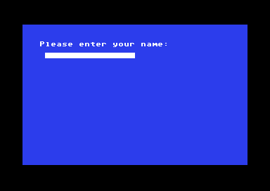

<meta charset="utf-8">
<meta name="viewport" content="width=device-width, initial-scale=1">
<title>Alter Ego</title>
<link rel="preconnect" href="https://fonts.googleapis.com">
<link rel="stylesheet" href="https://fonts.googleapis.com/css2?family=Lato:wght@400;700;900&family=IBM+Plex+Mono:wght@400;500&display=swap">
<style>
:root{
  --bg:#23262d; --paper:#e9e7e1; --surface:#ffffff; --surface-2:#f1efea; --line:#d5d3cc; --line-soft:#e0ded8;
  --ink:#2f3136; --ink-soft:#55585f; --ink-mute:#80838a;
  --link:#1f5fa8; --link-hover:#154480; --accent:#1f5fa8;
  --amber:#c25a00; --cyan:#1f5fa8; --coral:#d04a3a; --green:#2a8a4a; --violet:#4a5bd6; --hl:#fff0c2;
  --chip:#2f3136; --chip-ink:#ffffff;
  --c64blue:#40318d; --c64grey:#686868;
  --fd:'Lato',system-ui,sans-serif; --fb:'Lato',system-ui,sans-serif; --fm:'IBM Plex Mono',ui-monospace,Menlo,monospace;
  --col:1080px; --gx:68px; --fs:17px; --lh:1.6; --hw:900; --h1:46px; --h2:26px; --sy:48px; --pp:26px; --r:10px;
  --plate-shadow:0 1px 2px rgba(0,0,0,.05),0 4px 14px rgba(0,0,0,.05);
}
*{box-sizing:border-box}
html{background:var(--bg);min-height:100%}
body{background:var(--paper);color:var(--ink);font-family:var(--fb);font-size:var(--fs);line-height:var(--lh);max-width:var(--col);margin:0 auto;min-height:100vh;padding:0 0 4rem}
h1,h2,h3{font-weight:var(--hw);letter-spacing:-.01em;text-wrap:balance;color:var(--ink);margin:0}
.wrap{padding:0 var(--gx)}
.hero{padding:48px var(--gx) 8px;text-align:left}
.eyebrow{font-family:var(--fm);font-size:12px;letter-spacing:.08em;text-transform:uppercase;color:var(--ink-mute);margin:0 0 10px}
.hero h1{font-size:var(--h1);line-height:1.15;letter-spacing:-.02em;margin:0 0 14px}
.hero .sub{margin:0 0 .6em;color:var(--ink-soft)}
section{padding:var(--sy) 0 24px}
section:last-of-type{border-bottom:none}
.fig{font-family:var(--fm);font-size:12px;letter-spacing:.08em;text-transform:uppercase;color:var(--ink-mute);margin:0 0 10px}
h2.t{font-size:var(--h2);margin-bottom:12px}
.lede{color:var(--ink-soft);margin:0 0 30px}
.plate{background:var(--surface);border:1px solid var(--line);border-radius:var(--r);padding:var(--pp);box-shadow:var(--plate-shadow)}
.cap{font-size:14px;color:var(--ink-mute);margin-top:14px;line-height:1.55}
.cap b{color:var(--ink);font-weight:700}
code{font-family:var(--fm);font-size:.82em;background:var(--chip);color:var(--chip-ink);border-radius:4px;padding:2px 6px;white-space:nowrap}

</style>

<style>
a{color:var(--link)} a:hover{color:var(--link-hover)}
canvas{display:block;max-width:100%;height:auto;margin:20px auto;background:#16191e;image-rendering:pixelated;border-radius:4px}
label{display:inline-flex;align-items:center;gap:12px;margin:8px 18px 8px 0;flex-wrap:wrap;max-width:100%}
select,input,button{font:inherit;padding:7px;border:1px solid #a7abb2;border-radius:4px;max-width:100%;background:white;color:#252a35}
button{cursor:pointer}button:hover{background:#e4ebf5}input[type=range]{width:190px;accent-color:var(--accent)}
output,.readout{display:block;font:14px/1.6 var(--fm);padding:12px 0;overflow-wrap:anywhere}
.reference{max-width:100%;height:auto;display:block;margin:auto;image-rendering:pixelated}
table{border-collapse:collapse;width:100%;font-size:15px}th,td{text-align:left;padding:9px;border-bottom:1px solid var(--line)}
details{margin:16px 0;padding:12px 16px;background:var(--surface-2);border-radius:6px}summary{cursor:pointer;font-weight:700}
.key{display:inline-block;padding:3px 10px;margin:4px;border-radius:4px;background:#e1e6ed;font-size:14px}
pre{white-space:pre-wrap;overflow-wrap:anywhere;font:13px/1.6 var(--fm);max-height:420px;overflow:auto;background:#16191e;color:#eee;padding:18px}
@media(max-width:650px){:root{--gx:22px;--h1:36px;--sy:32px;--pp:16px}th,td{padding:6px;font-size:13px}}
</style><!-- tabs -->
<header class="hero"><p class="eyebrow">Commodore 64 · 1986 · Activision</p><h1>Alter Ego</h1><p class="sub">A life simulation controlled through menus and choices. This capture begins at the male edition’s name prompt.</p></header>
<main class="wrap"><section><p class="fig">01 · First interaction</p><h2 class="t">Enter your name</h2><div class="plate"><p class="cap">Captured from a fresh disk boot, after selecting Begin a new game.</p></div></section>
<section><p class="fig">02 · Program</p><h2 class="t">Native code and compiled bytecode</h2><p>The Source tab preserves the physical memory at this prompt. The supplied VM decoder identifies 82 compiled procedures containing 7,071 operations; rerunning it on the fresh snapshot reproduces those operation records. Native routines handle the machine-specific work.</p></section>
<section><p class="fig">03 · Hidden RAM</p><h2 class="t">A stored copy beneath the I/O chips</h2><p>RAM at <code>$D800</code> through <code>$DFFF</code> contains a 2,048-byte copy of <code>$ABEB</code> through <code>$B3EA</code>. The fresh snapshot matches every byte. CPU accesses to colour RAM and CIA registers at those same addresses refer to a different occupant.</p></section>
<section><p class="fig">04 · Scope</p><h2 class="t">One loaded state</h2><p>The first name prompt is the declared Source state. After the questionnaire, the game loads replacement gameplay code. Male and female gameplay need independently captured listings; the imported overlay exports remain leads for that work.</p></section></main>
